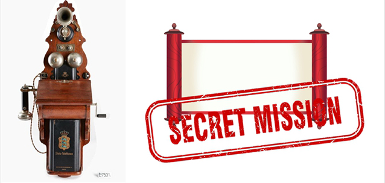
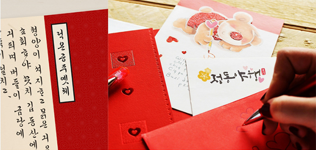
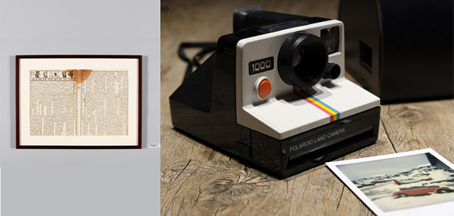
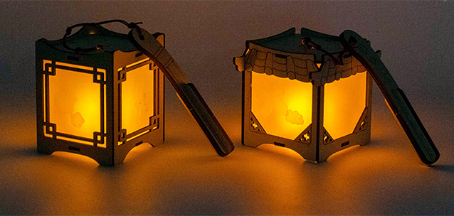
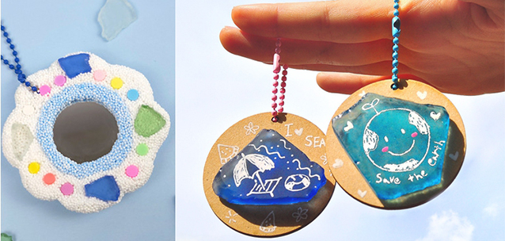
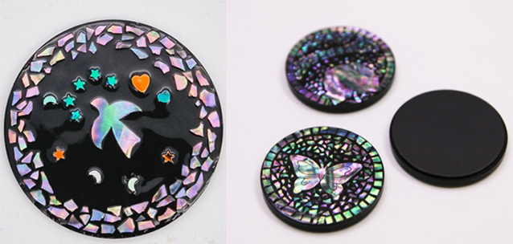

야사(夜史)
JEONG-DONG CULTURE NIGHT
근대역사체험
다양한 체험으로 배우는
중구의 역사 이야기
장소
덕수궁 돌담길 체험존
시간
금(fri) 18:00~22:00, 토(sat) 14:00~22:00
※무료체험은 재료 소진 시 조기마감 될 수 있습니다.
-

고종의 비밀 특명을 수행하라
한국 최초 전화 ‘덕률풍’을 모티브로 근대 전화기를 통해 전하는 고종의 비밀 특명 수행
체험비 무료 -

정동 손글씨 엽서 꾸미기
순종, 덕온공주 등의 서체를 따라 쓰고, 다양한 스탬프로 꾸며 나만의 정동 엽서 만들기 체험
체험비 무료 -

정동야행의 특별한 호외
독립신문을 모티브로 본인의 사진을 즉석 인화하여 부착 후 기사를 작성해보는 1일 기자 체험
체험비 무료 -

나의 밤을 밝혀줄 전통 무드등 만들기
대한제국을 밝혀준 초롱을 모티브로 한 전통 무드등 만들기 체험
체험비 5,000원 -

업사이클링 바다유리 키링 만들기
서양식 건축 양식을 반영한 건물들을 모티브로 나만의 버려진 바다유리 키링 및 미니거울 만들기
체험비 5,000원 -

전통 자개로 영롱한 현대 제품 만들기
서양식 건축 양식을 반영한 건물들을 모티브로 나만의 버려진 바다유리 키링 및 미니거울 만들기
체험비 5,000원